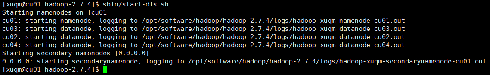
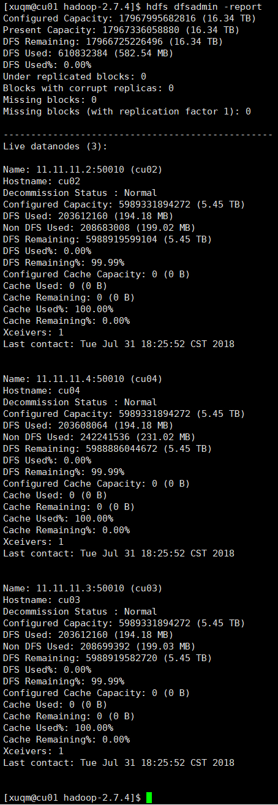
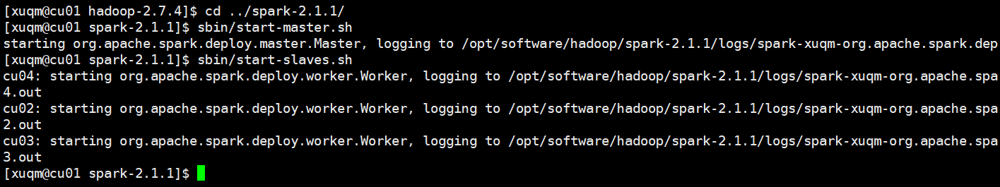
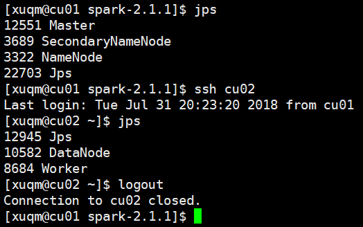
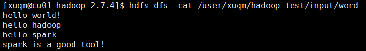
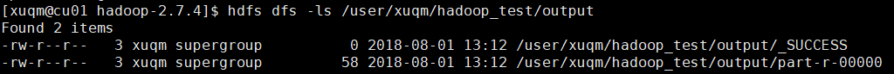
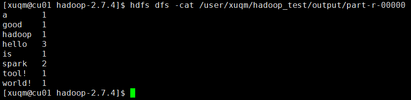
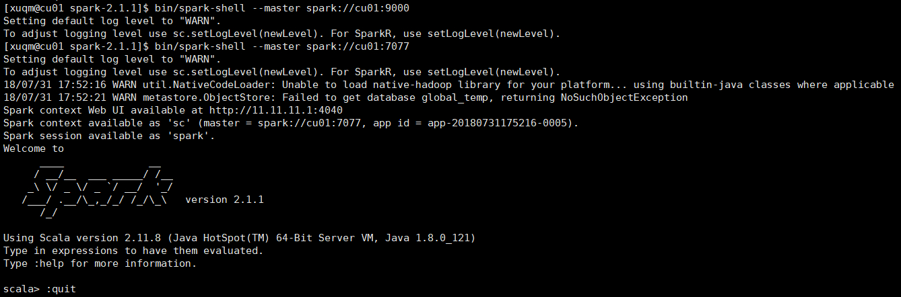
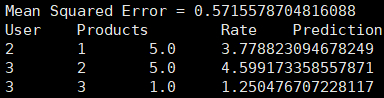
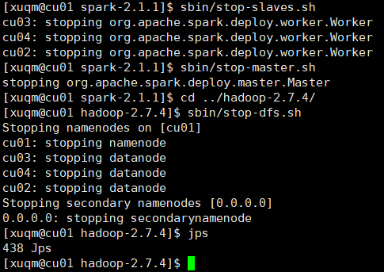

忙活了半天，终于在实验室的浪潮集群中配置好了hadoop和spark，以后能用配置这么高的服务器了，想想就好开心~
1 环境简介
1.1 软件版本
- Hadoop版本号：2.7.4
- Spark版本号：2.1.1
1.2 运行环境
部署于西北工业大学高性能计算中心的浪潮集群服务器，master节点为cu01，slaves节点为cu02、cu03、cu04。
Hadoop安装目录为/opt/software/hadoop/hadoop-2.7.4
Spark安装目录为/opt/software/hadoop/spark-2.1.1
2 使用说明
2.1 登录
可使用xshell等软件用ssh方式连接到cu01（仅限西工大校园网内网，IP地址：202.***.***.29），登录账号：xuqm，密码：********。
2.2 启动Hadoop
进入hadoop的安装目录，输入sbin/start-dfs.sh,如图：

之后可输入hdfs dfsadmin -report查看节点状态以确定是否启动成功，如下图：

所有节点都正常运行，表示启动成功。也可进入网页查看，地址：http://202.***.***.29:50070。
2.3 启动Spark
在本集群中，要使用spark必须先启动hadoop（即进行上一步2.2）。之后进入Spark的安装目录，通过输入sbin/start-master.sh和sbin/start-slaves.sh来启动spark的主、从节点：

在主节点上和从节点上输入jps查看当前进程以确定是否启动成功：

若观察到主节点上有Master进程，从节点上有Worker进程，则表示启动成功。
2.4 使用Hadoop
这里演示一个hadoop自带的词频统计的例子：
2.4.1 准备数据
创建一个文件，给其中写入几句话，并将此文件上传至HDFS上。例如：

2.4.2 运行
进入hadoop的安装目录，输入如下：1
[xuqm@cu01 hadoop-2.7.4]$ hadoop jar share/hadoop/mapreduce/hadoop-mapreduce-examples-2.7.4.jar wordcount /user/xuqm/hadoop_test/input /user/xuqm/hadoop_test/output
其中，wordcount是jar包中的一个类，后两个参数分别为原始数据的存放路径和经处理后结果的存放路径。
2.4.3 查看结果
查看存放结果的目录，如下图，发现有_SUCCESS文件，表示处理成功：

查看另一个文件的内容即为最终结果：

2.5 使用Spark
正常运行完上述启动步骤后，便可使用spark了。可以通过spark-shell（使用Scala语言）或pyspark（使用Python语言）进行交互式编程，或者使用spark-submit提交已写好的程序到集群上运行。需要注意的是，在执行上述命令时，需加上参数--master spark://cu01:7077,否则spark将会以local模式运行。
注：
spark-shell、pyspark、spark-submit都在bin文件夹下
举个例子：

再如，用submit提交运行一个ALS最小二乘法的推荐算法小例子（代码详见Spark MLlib中ALS交替最小二乘法推荐算法的使用），输入：1
[xuqm@cu01 spark-2.1.1]$ ./bin/spark-submit --master spark://cu01:7077 /home/xuqm/spark_mllib_test.jar
输出如下：

可以进入网页查看spark各节点的运行状态，地址：http://202.***.***.29:8080/，在spark运行时，可进入http://202.***.***.29:4040/ 查看作业运行情况。
2.6 关闭
程序运行结束，关闭spark和hadoop时应按照一定顺序，即和启动顺序相反：先关spark，再关hadoop。关闭方式和启动方式类似，将对应的start都改为stop即可。
